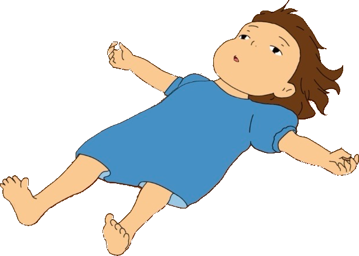
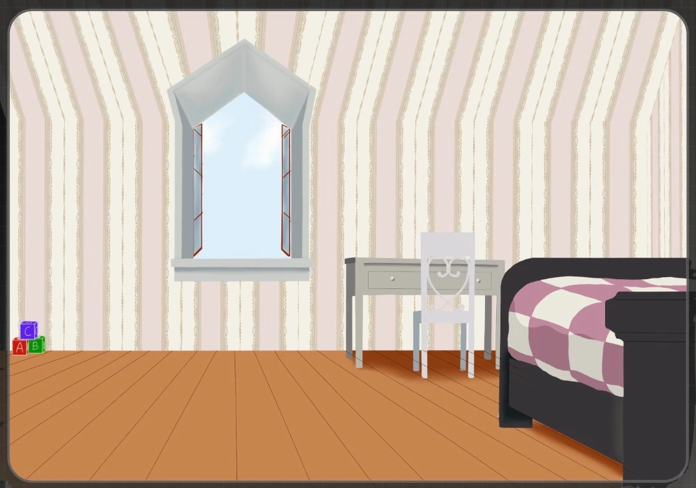

Hallo! Willkommen
in unserer Galerie!
Eine Webseite im Comic-Stil - inspiriert vom Neobrutalismus.
→ Zur GalerieArbeiten aus dem Kurs – klick dich mit den Pfeilen durch oder wähl unten eine Person aus.


Es ist der praktische Teil von meiner Seminararbeit, wo ich versuche, eine Webseite im Comic-Stil zugestalten.
Mithilfe von HTML und CSS habe ich versucht, Elemente von Neobrutalismus zu präsentieren.
Diese Webseite könnte auch als unsere Online-Galerie dienen.